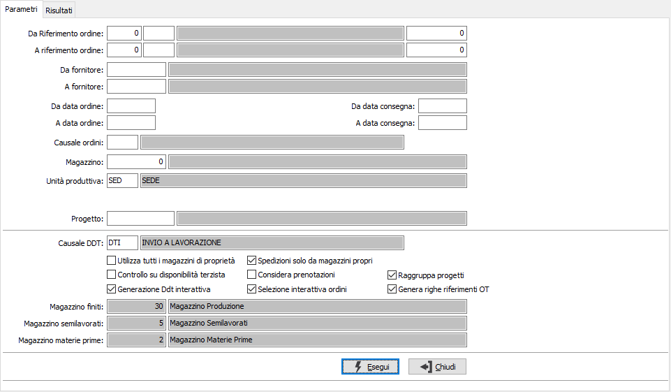
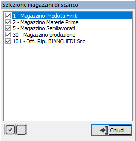
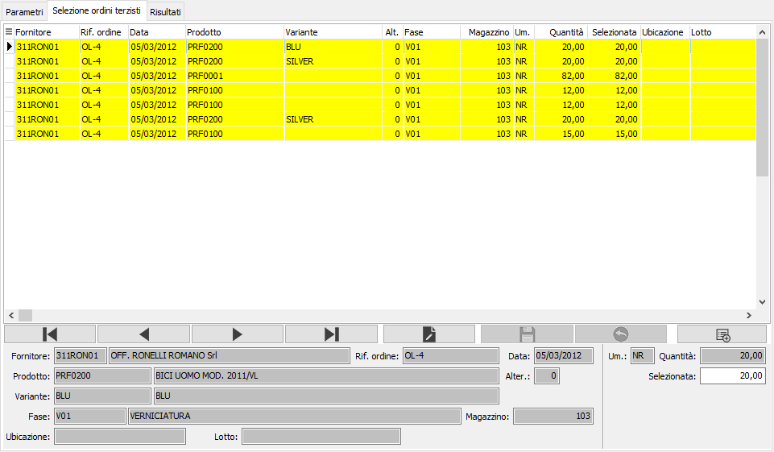
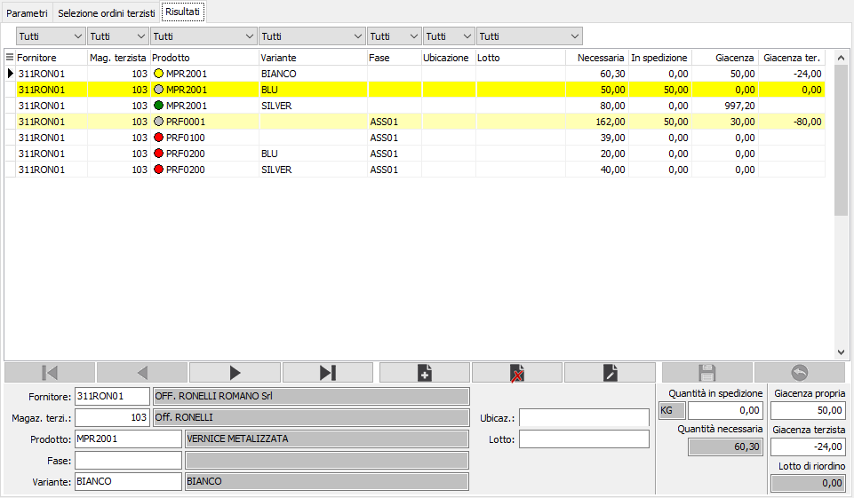
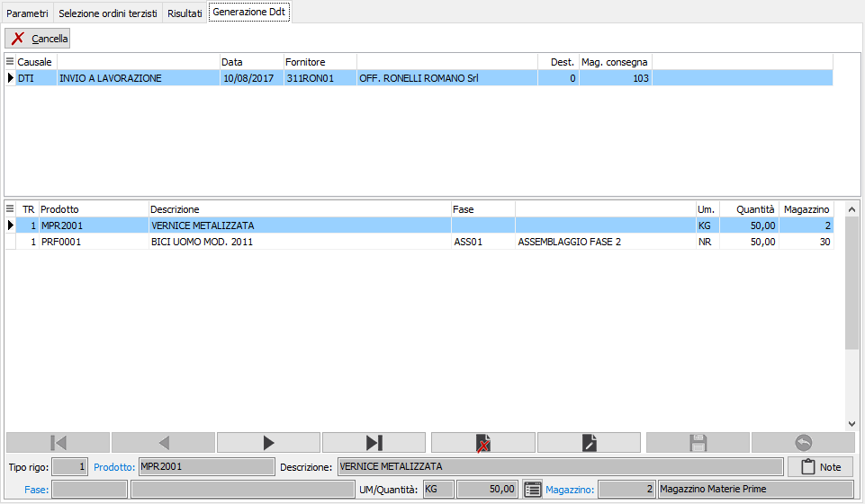

La pressione sul pulsante avvierà l'elaborazione
per la generazione delle righe Ddt relativamente a quanto selezionato.
La pressione sul pulsante avvierà l'elaborazione
per la generazione delle righe Ddt relativamente a quanto selezionato.Generazione DDT
Il programma, analizzando i fabbisogni e gli impegni del terzista, le giacenze presso il suo magazzino e le giacenze dei magazzini aziendali provvede a creare in automatico i documenti di spedizione dei materiali necessari per la lavorazione; la selezione avviene in maniera interattiva lasciando all'utente la possibilità di selezionare liberamente cosa inviare ai terzisti; se in configurazione Conto lavoro il parametro “Tipo controllo giacenza” è impostato a “Nessun controllo” oppure a “Controllo non vincolante” sarà possibile spedire anche una quantità maggiore di quella presente a magazzino, altrimenti non si potrà andare oltre la giacenza.
Il programma si articola su due finestre video. La prima, Parametri, consente la definizione dei parametri di analisi.

E' possibile analizzare gli ordini per riferimento, anno causale e numero, per fornitore, prodotto, data documento, data di consegna, causale e magazzino; viene proposta come causale DDT per la generazione quella eventualmente presente nei dati preferenziali utente, altrimenti la causale presente in configurazione nei dati preferenziali. Se presente il modulo di produzione sarà richiesta anche l'unità produttiva, che se compilata, limiterà l'utilizzo dei magazzini solo a quelli previsti dall'unità produttiva stessa. Se presente il modulo Progetti/Commesse ed attiva la gestione sarà richiesto anche il codice progetto, che se compilato, limiterà la selezione degli ordini a quel solo progetto.
La casella "Utilizza tutti i magazzini di proprietà" indica di utilizzare tutti i magazzini di proprietà (casella con spunta), oppure consente di specificare gli eventuali magazzini da cui scaricare i materiali da inviare al terzista; se si clicca sulla casella con la spunta si apre la finestra di selezione che permette di specificare, apponendo la spunta ai magazzini desiderati, quali magazzini considerare per lo scarico.

La casella "Spedizioni solo da magazzini propri", se spuntata, indica se considerare, per la spedizione, solo le giacenze dei magazzini propri, cioè, di proprietà senza indicazione del fornitore.
La casella "Controllo su disponibilità", se spuntata, di confrontare le quantità da inviare con le disponibilità sul magazzino del terzista e non sulla giacenza del terzista.
Tramite la casella "Considera prenotazioni" è possibile utilizzare le giacenze al netto delle prenotazioni eventualmente effettuate tramite liste di prelievo (casella con segno di spunta) oppure le giacenze lorde (casella vuota).
La casella "Generazione Ddt interattiva" viene proposta spuntata o vuota in base all'omonimo parametro presente nella configurazione del conto lavoro e consente di verificare i Ddt che saranno generati, mostrandoli prima del salvataggio in una pagina aggiuntiva.
Nel caso in cui il controllo giacenza non sia vincolante compaiono anche i magazzini da utilizzare per le eventuali righe create relativamente a prodotti senza giacenza o con giacenza inferiore al necessario; tali magazzini vengono proposti automaticamente dalla configurazione del conto lavoro o, se presente la produzione, dall'unità produttiva ed in questo caso non saranno modificabili.
Le caselle "Selezione interattiva ordini" e "Genera righe riferimenti OT" sono collegate ed impostate con la spunta in base al parametro di configurazione del conto lavoro "Genera righe Ddt per ordine terzista"; la casella "Genera righe riferimenti OT" è attivabile se la casella "Selezione interattiva ordini" ha la spunta; se la casella è spuntata saranno generati i componenti analiticamente per rigo OT e di conseguenza generate le righe dei Ddt anteposte da un rigo descrittivo riportante nella descrizione il riferimento all'ordine terzista (secondo la tabella riferimenti documenti) e la data e nel campo note il prodotto/fase dell'ordine terzista a cui si riferiscono i componenti inserendo le diciture che vengono utilizzate in fase di stampa dei Ddt (codice testo stampa 38 prima del composto e codice testo stampa 39 prima dell'elenco componenti).
La casella "Selezione interattiva ordini" quando spuntata consente di accedere ad una pagina aggiuntiva prima dell'elaborazione dei Ddt da cui è possibile decidere quali ordini elaborare.

Confermando tramite pressione del bottone Esegui, Vengono mostrati gli ordini tutti in stato di selezionato ed possibile Selezionare/annullare un rigo (col doppio clic del mouse), oppure tramite il menù contestuale richiamabile tramite il tasto destro del mouse che include le funzioni di selezionare oppure annullare tutte le righe; è possibile intervenire anche manualmente sulla quantità agendo sull'apposito campo "Selezionata".
La pressione sul pulsante avvierà l'elaborazione
per la generazione delle righe Ddt relativamente a quanto selezionato.
Se non è stata selezionata l'elaborazione interattiva degli ordini, confermando tramite pressione del bottone Esegui, viene avviata l'elaborazione ed al termine viene richiamata la finestra Risultati dove appaiono già selezionati tutti i materiali per cui è presente un impegno, è presente una giacenza, in base al tipo di controllo attivo, ed il terzista non dispone del quantitativo sufficiente.

Sopra le colonne, ad eccezione delle quantità, sono presenti delle caselle che consentono di filtrare la visualizzazione in relazione ai valori delle singole colonne: ad esempio cliccando sulla colonna fornitore, se presenti più codici, selezionandone uno saranno visualizzate solo le righe dove compare il fornitore selezionato; le caselle di filtro sono combinabili, ad esempio seleziono un fornitore ed un prodotto.
Nella colonna prodotto è presente un cerchio colorato che indica lo stato del prodotto:
rosso: giacenza zero, il prodotto non è disponibile per la spedizione;
giallo: giacenza non sufficiente, il prodotto è disponibile per la spedizione, ma in quantità non sufficiente a coprire le necessità del terzista;
verde: giacenza sufficiente, il prodotto è disponibile per la spedizione ed in quantità sufficiente a coprire le necessità del terzista;
grigio: rigo giallo o verde selezionato.
L'utente ha la facoltà, tramite un menù richiamabile col tasto destro del mouse, di effettuare la selezione generale, di annullare l'intera selezione, selezionare ed annullare singoli materiali; ovviamente saranno selezionate solo le righe per cui è presente una giacenza, quindi quelle con cerchio verde o giallo. E' inoltre possibile modificare la quantità dal campo "Quantità in spedizione" per effettuare invii parziali anche in presenza di giacenza sufficiente; dal campo, tramite i tasti CTRL+F12, si può accedere alla finestra relativa alla conversione di una unità di misura all'unità di misura del documento.
La pressione sul tasto Salva sulla toolbar determinerà il salvataggio, previa richiesta di conferma e sarà avviata la generazione dei documenti. Al termine della generazione sarà visualizzato un messaggio dove vengono riportati tutti i Ddt generati e sarà richiesto se si vuole effettuarne la stampa.
Se è stata spuntata la casella "Generazione Ddt interattiva" non sarà effettuata subito la generazione ma sarà visualizzata la pagina "Generazione Ddt".

In questa pagina vengono visualizzati, prima della generazione, i Ddt risultato della selezione precedente; la pagina mostra la griglia delle teste e la griglia delle righe con il dettaglio dei campi nel pannello in basso; è possibile inserire delle note sulle righe tramite l'apposito pulsante, cancellare le righe e tramite il pulsante Cancella in alto, eliminare l'intero Ddt su cui si è posizionati.
 In presenza della
gestione matricole la generazione Ddt terzisti viene eseguita forzatamente
in modo interattivo perché dopo la generazione temporanea dei documenti
è necessario procedere all’assegnazione delle matricole dalla pagina di
Generazione dove vengono visualizzati i documenti che saranno generati;
è presente il pulsante Matricole che consente l’utilizzo della finestra
di assegnazione massiva matricole
per completare l’assegnazione. Se non vengono assegnate tutte le matricole,
eccezion fatta per i componenti alla fase nel caso di assegnazione matricola
all’ultima fase della produzione, non sarà possibile effettuare la generazione.
I Ddt temporanei, in caso di gestione lotti/ubicazioni non definiti, saranno
creati già con i lotti/ubicazioni assegnati, se trovate delle giacenze.
In presenza della
gestione matricole la generazione Ddt terzisti viene eseguita forzatamente
in modo interattivo perché dopo la generazione temporanea dei documenti
è necessario procedere all’assegnazione delle matricole dalla pagina di
Generazione dove vengono visualizzati i documenti che saranno generati;
è presente il pulsante Matricole che consente l’utilizzo della finestra
di assegnazione massiva matricole
per completare l’assegnazione. Se non vengono assegnate tutte le matricole,
eccezion fatta per i componenti alla fase nel caso di assegnazione matricola
all’ultima fase della produzione, non sarà possibile effettuare la generazione.
I Ddt temporanei, in caso di gestione lotti/ubicazioni non definiti, saranno
creati già con i lotti/ubicazioni assegnati, se trovate delle giacenze.
La pressione sul tasto Salva sulla toolbar determinerà il salvataggio, previa richiesta di conferma e sarà avviata la generazione dei documenti. Al termine della generazione sarà visualizzato un messaggio dove vengono riportati tutti i Ddt generati e sarà richiesto se si vuole effettuarne la stampa.